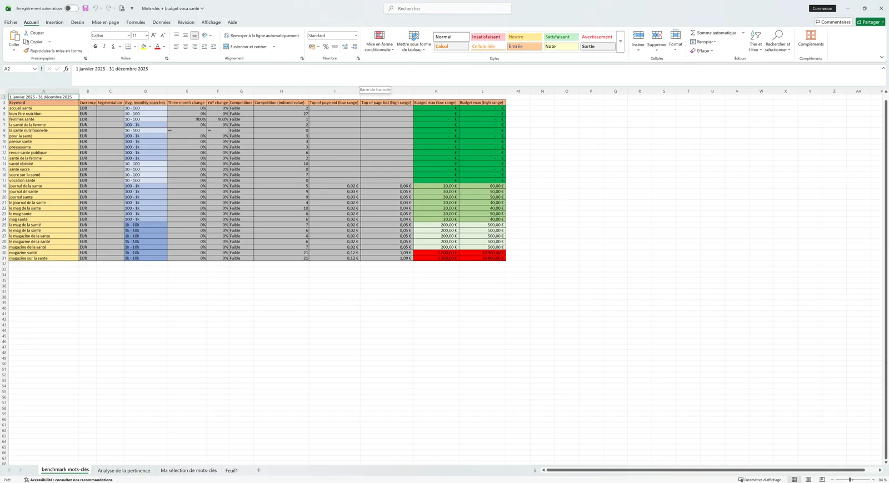
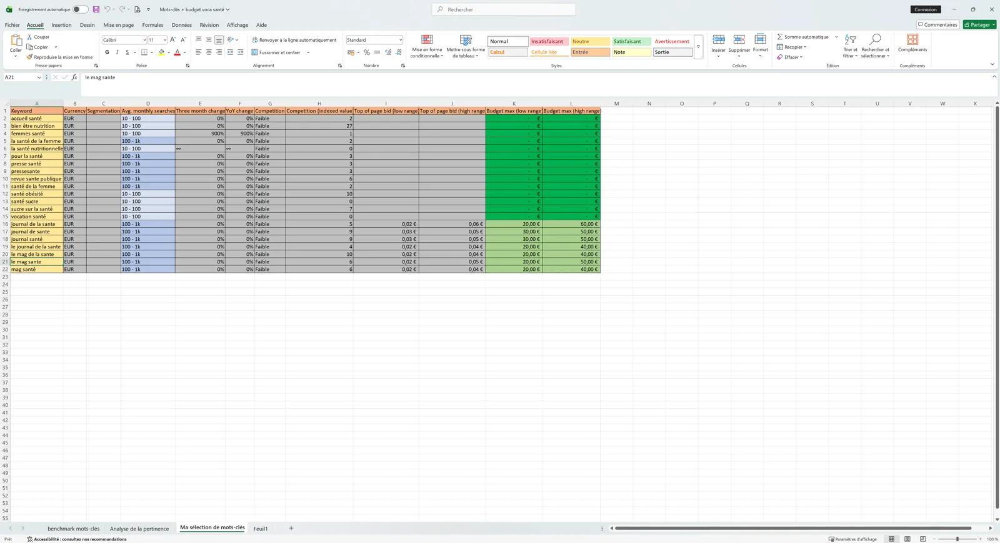
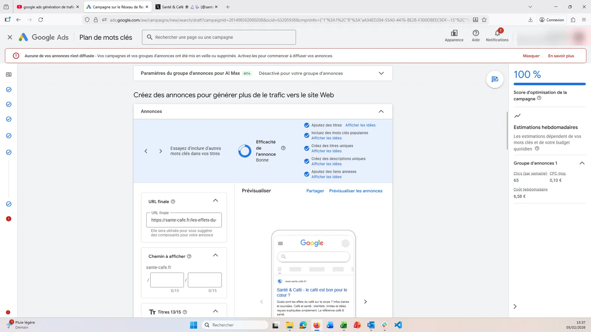
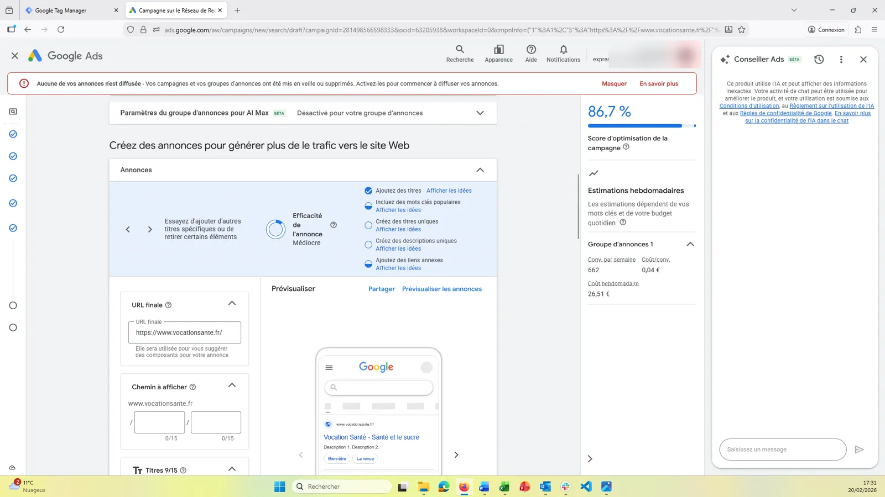
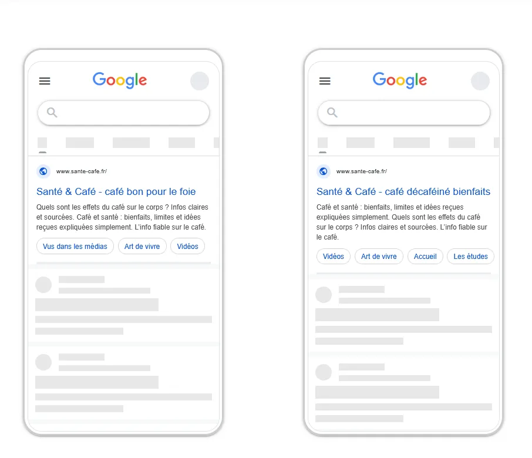
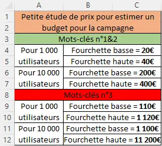

Tim Agoune
Tim Agoune01Objectif
Étudier puis créer des campagnes Google Ads pour augmenter le trafic des sites de l'entreprise, avec un double objectif : améliorer les statistiques de nos sites (nombre d'utilisateurs, pages vues, etc.) et améliorer la notoriété des revues.
02Démarche
J'ai d'abord réalisé un benchmark de mots-clés avec l'outil de planification Google Ads : volume de recherche, concurrence et coût par clic pour chaque expression. J'ai ensuite présenté à la direction une estimation de budget, qui a été validée pour lancer une campagne de test.


J'ai ensuite construit les campagnes de bout en bout dans Google Ads, pour deux sites du groupe. Pour Santé & Café, la campagne atteint un score d'optimisation de 100 % avec un coût par clic moyen estimé à 0,10 € ; pour Vocation Santé, j'ai paramétré les annonces, les titres et les descriptions sur le même modèle.




03Moyens et outils
- outil de planification Google Ads pour le benchmark des mots-clés ;
- Google Ads pour la création des campagnes et des annonces ;
- Excel pour l'analyse des mots-clés et l'estimation du budget ;
- présentation du budget à la direction avant le lancement.